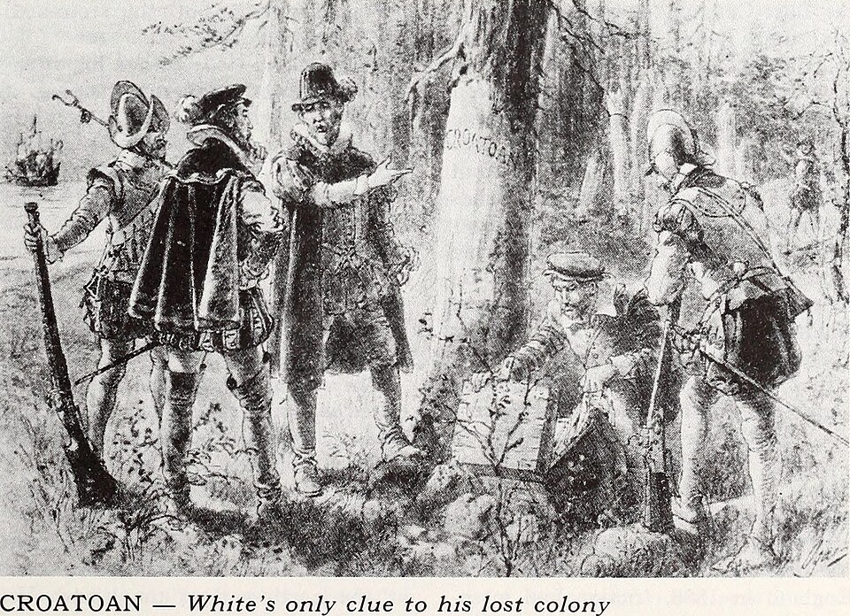
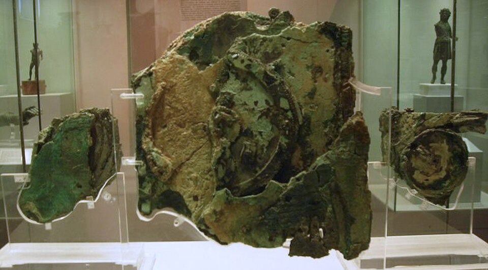
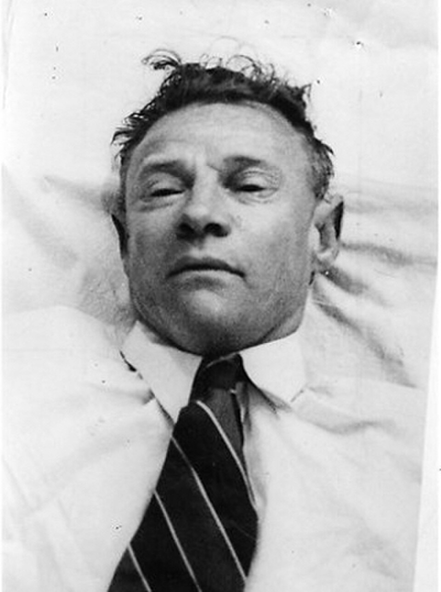
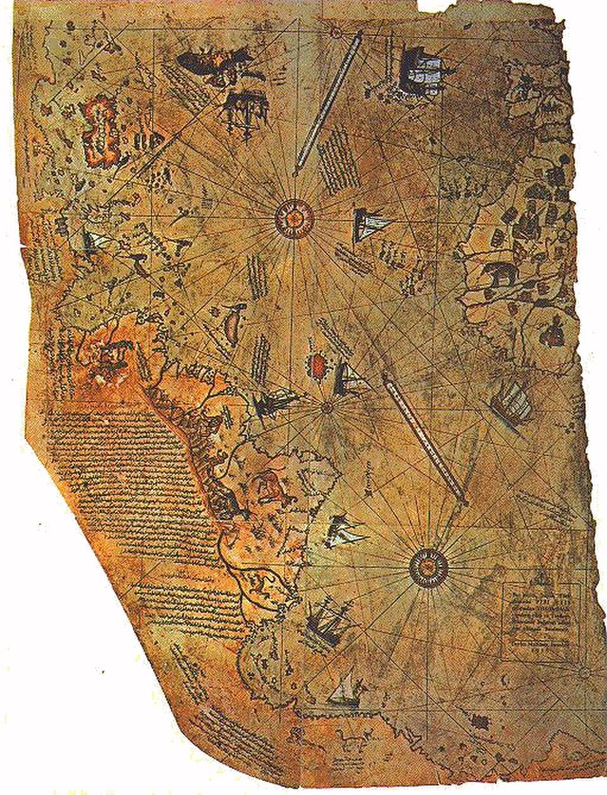
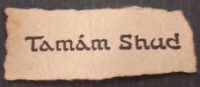
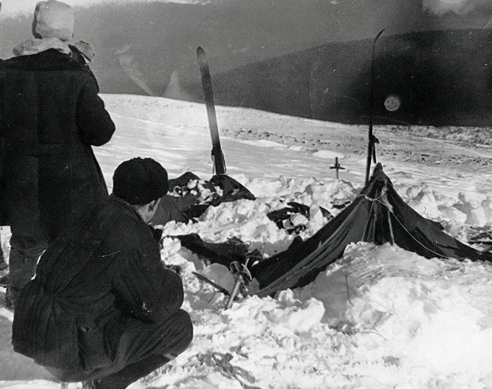

Todos los casos registrados en Archivo 404, organizados por
categoría. Cada ficha es un resumen; el expediente completo con
fuentes, cronología y material fotográfico está en la sección de
Expedientes.
Galería de casos

La colonia perdida de Roanoke
La única pista que quedó en el asentamiento vacío fue la palabra CROATOAN.
Las estaciones de números
Voces mecánicas que repiten secuencias en onda corta desde la Guerra Fría.

El Mecanismo de Anticitera
Un computador de engranajes de más de 2000 años, rescatado de un naufragio romano.

El hombre de Somerton
Imagen forense difundida por la policía australiana en 1949. La causa de muerte sigue abierta.

Los mapas de Piri Reis
Fragmento de 1513 conservado en la Biblioteca del Palacio Topkapi, Estambul.
En diciembre de 1872, el bergantín Mary Celeste fue encontrado a
la deriva en el Atlántico, entre las Azores y la costa
portuguesa. La carga de alcohol industrial estaba intacta, las
pertenencias personales seguían en los camarotes y había comida
servida. Pero ni el capitán Benjamin Briggs, ni su esposa, ni su
hija de dos años, ni los siete tripulantes aparecieron jamás.
El único bote salvavidas faltaba.
Ilustración del Mary Celeste publicada en prensa tras el hallazgo de 1872.
La colonia perdida de Roanoke
En 1587, un grupo de 115 colonos ingleses se estableció en la
isla de Roanoke, en lo que hoy es Carolina del Norte. Cuando el
gobernador John White volvió de un viaje a Inglaterra tres años
después, encontró el asentamiento completamente vacío. No había
señales de lucha, no había cuerpos. La única pista: la palabra
"CROATOAN" tallada en un poste de madera. Nunca se encontró a
ninguno de los colonos.
Recreación del momento en que John White descubre la inscripción en Roanoke.
El faro de las islas Flannan
Diciembre de 1900, Escocia. El barco de relevo llega al faro de
las islas Flannan y encuentra la puerta cerrada, la mesa puesta,
un reloj detenido y ningún rastro de los tres fareros que debían
estar de guardia. Solo dos de los tres juegos de ropa impermeable
faltaban, lo que sugiere que uno de ellos salió a la tormenta sin
protección. El mar estaba calmo ese día.
El faro de Eilean Mòr, islas Flannan, donde desaparecieron los tres fareros.
Señales y comunicaciones
La Señal Wow!
Una ráfaga de radio de 72 segundos, captada en 1977 desde la
constelación de Sagitario, con una intensidad que no coincide
con ninguna fuente natural o artificial conocida. El astrónomo
que la detectó escribió "Wow!" en la impresión. Nunca se repitió.
La secuencia 6EQUJ5 registrada por el Big Ear el 15 de agosto de 1977.
Las estaciones de números
Desde la Guerra Fría, radioaficionados de todo el mundo captan
transmisiones en onda corta donde voces mecánicas repiten
secuencias de números en distintos idiomas. Algunas, como UVB-76
(conocida como "The Buzzer"), llevan décadas emitiendo un zumbido
monótono desde Rusia, interrumpido de vez en cuando por mensajes
codificados. Nadie confirmó oficialmente su propósito.
Receptor de onda corta del tipo utilizado para sintonizar estaciones de números.
El caso Taman Shud y su código
Un trozo de papel con las palabras "Tamám Shud" (que significa
"terminado" en persa) fue encontrado cosido en el bolsillo del
pantalón de un hombre sin identificar, hallado muerto en la
playa de Somerton, Australia, en 1948. El papel había sido
arrancado de un ejemplar raro de los Rubaiyat de Omar Khayyam.
En la contratapa de ese libro aparecía un código manuscrito que
nunca fue descifrado.

El fragmento de papel encontrado oculto en la ropa del hombre de Somerton.
Objetos y documentos inexplicables
El manuscrito Voynich
240 páginas escritas en un alfabeto que no corresponde a ningún
idioma conocido. Ilustraciones de plantas que no existen,
diagramas astronómicos que no coinciden con ningún sistema
documentado. Datado por carbono-14 en el siglo XV, el manuscrito
se resiste a todo intento de traducción desde hace más de cien
años.
Páginas con diagramas astronómicos del manuscrito Voynich, Biblioteca Beinecke, Yale.
El Mecanismo de Anticitera
Rescatado en 1901 de un naufragio romano frente a la isla griega
de Anticitera, este dispositivo de engranajes de bronce tiene más
de 2000 años. Es capaz de predecir eclipses, seguir ciclos
lunares y rastrear los juegos olímpicos. La tecnología necesaria
para construirlo no volvió a aparecer hasta más de mil años
después, en los relojes europeos medievales.
Fragmento principal del Mecanismo, Museo Arqueológico Nacional de Atenas.
Los mapas de Piri Reis
Un mapa dibujado en 1513 por el almirante otomano Piri Reis
muestra con notable precisión la costa oriental de Sudamérica
y, según algunas interpretaciones, un contorno que se asemeja
a la costa de la Antártida sin hielo. El continente antártico
no fue descubierto oficialmente hasta 1820, y su línea costera
bajo el hielo no se mapeó hasta el siglo XX con tecnología de
radar.
Fragmento sobreviviente del mapa de Piri Reis, Biblioteca del Palacio Topkapi, Estambul.
Muertes inexplicables
El incidente del Paso Dyatlov
Nueve excursionistas mueren en los Urales en febrero de 1959
después de abandonar su tienda en plena noche, a -30 °C,
algunos sin calzado. Fracturas masivas sin trauma externo,
rastros de radiactividad y una tienda rasgada desde adentro.
La investigación soviética cerró el caso como "fuerza natural
irresistible desconocida".

Última fotografía conocida del grupo completo, tomada durante los primeros días de la marcha.
El hombre de Somerton
1 de diciembre de 1948, playa de Somerton, Adelaida, Australia.
Un hombre bien vestido aparece muerto recostado contra un muro.
Sin documentos. Todas las etiquetas de su ropa habían sido
arrancadas. La autopsia no pudo determinar la causa de muerte.
Ningún país del mundo lo reclamó. En 2022, investigadores de la
Universidad de Adelaida lograron una posible identificación
mediante ADN, pero las circunstancias de su muerte siguen sin
resolverse.
Imagen forense del hombre de Somerton, difundida por la policía australiana en 1949.
La muerte de Elisa Lam
En febrero de 2013, el cuerpo de la turista canadiense Elisa Lam
fue encontrado dentro del tanque de agua del Hotel Cecil, en Los
Ángeles. El video de vigilancia del ascensor la muestra minutos
antes de su muerte con un comportamiento que generó todo tipo de
teorías. La tapa del tanque estaba cerrada. La investigación
oficial concluyó que fue un accidente, pero muchos aspectos del
caso siguen sin una explicación satisfactoria.
El Hotel Cecil, hoy conocido como Stay on Main, escenario de la muerte de Elisa Lam.